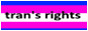
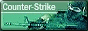
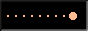

/\_/\ ( o.o ) > ^ < zzz
haiii im techy. high school freshman tinkering with code, desktop linux, and niche tools since 2019 (... days ago).
started in scratch, moved through web apps, minecraft bedrock scripting, and settled on fedora kde as my main driver. mostly i just fork/remix open-source projects or build hyper-specific utilities i need.
games i like/have played
ultrakill · anything in the source, goldsource, half life, or portal universe · minecraft · oneshot · kinitopet · postal 2 · buckshot roulette · doki doki literature club · geometry dash (i suck ass) · class of 09
musiiiic
most absurd rotation you have heard: tool, heaven pierce her, the weeknd (house of balloons / older era), master boot record / keygen church, aphex twin, deftones, pitchshifter, limp bizkit, kelly bailey, sean terry, kevin sherwood, if you want to see the entire discography though, head over to
stuff i (or others) have made and messed with
told you, but i actually like this one now way more
self explanatory i guarantee this one wont last very long as well



